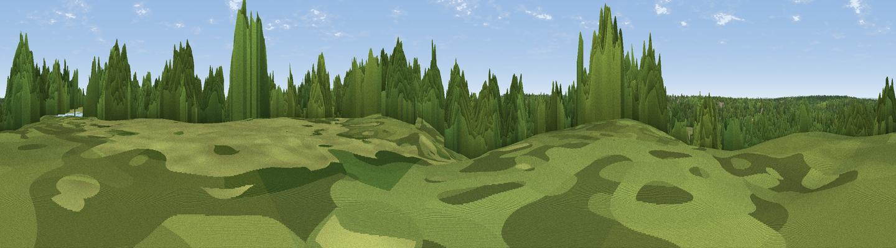

Shrubs Hill
#44236 in England · top 62% of its area beats it · near BlacknestWhere it is
The exact computed spot (SU 96401 67900). Click the marker for map links.
The view, rendered

A 360° render of this exact spot computed from the terrain model, tree cover and land cover — summer colours, afternoon light, calibrated against photographs of famous viewpoints. Real trees, hedges and buildings will differ in detail.
The panorama
Grey silhouette: terrain skyline in each direction (720 bearings, Earth curvature and refraction included). Dashed green: skyline with trees (+15 m) and buildings (+8 m) as obstacles. Blue strip: how far the ground is visible on each bearing.
Where the view opens
Wedge length = distance to the farthest visible ground on that bearing (vegetation-aware). Rings at 10, 25 and 50 km.
What fills the view
65% woodland · 25% grassland · 6% built-up · 2% cropland ·
Angular shares of the visible panorama (visual magnitude), not map area. Landscape diversity 0.41 (0–1 Shannon).
Key numbers
More beautiful places nearby
The staircase of upgrades: each row has a higher view potential than everything closer. Driving times are estimates from straight-line distance, calibrated against real road routing — check an actual route before setting out.
| Place | Direction | Drive | Score |
|---|---|---|---|
| Viewpoint near Valley End | SSW · 3 km | ~8 min | 28.5 |
| Viewpoint near Bishopsgate | NNE · 5 km | ~11 min | 36.6 |
| High Curley Hill | SW · 8 km | ~16 min | 38.5 |
| Windsor Castle | N · 9 km | ~18 min | 39.8 |
| Viewpoint near Guildford | S · 19 km | ~33 min | 47.8 |
| Viewpoint near Compton | S · 19 km | ~33 min | 49.4 |
| Viewpoint near Shere | SSE · 21 km | ~36 min | 50.1 |
| Viewpoint near Ewhurst | SSE · 28 km | ~44 min | 63.9 |
51.40195, -0.61556 · source: dobih hill · position refined by local search. Computed location — check access rights before visiting.